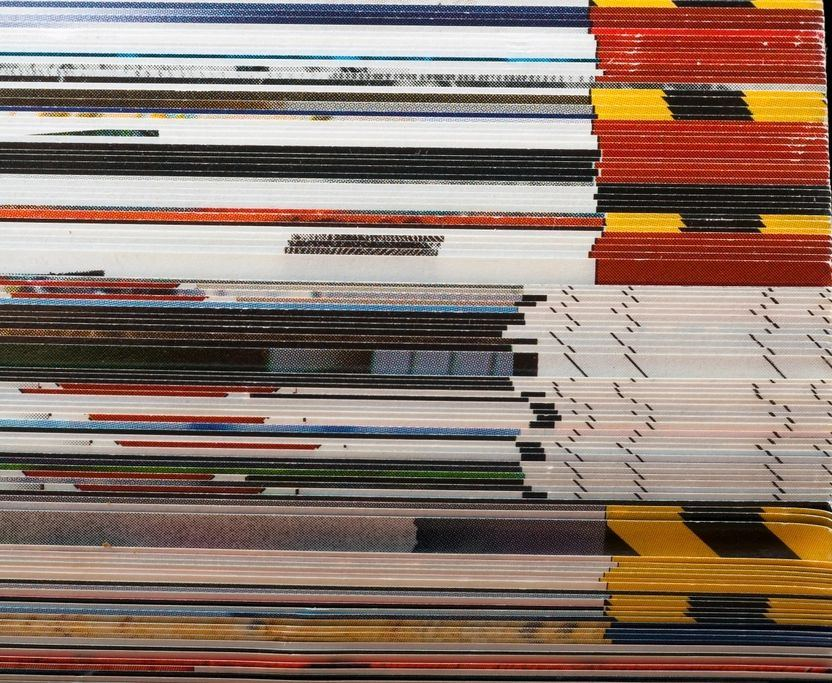

Cağaloğlu Yokuşu'nda davetiye ve matbaa
Mutlu haberiniz bir zarfla yola çıksın
Düğün, nişan, söz, kına, sünnet ve doğum günü davetiyeleri; yanında kartvizit, broşür ve diğer baskı işleri. Modelleri dükkânda elinize alın, metninizi birlikte toparlayalım.
Düğünümüze davetlisiniz
Ayşe&Mehmet
5 Haziran 2027 · Cumartesi · 19.30
Ad ve tarih örnektir
Karttaki adlar ve tarih yalnızca örnektir. Kendi adlarınızla görmek için canlı önizlemeyi açın.
Hangi davet için?
Her davetin kendi dili var: düğünün coşkusu, sözün samimiyeti, kınanın duygusu, sünnetin şenliği. Bir karta dokunun; o davetin metin kalıplarını, adların yazılış düzenini ve dağıtım zamanını davetiyeler sayfasında bulun.
-
Düğün
Aile adları, gelin ve damadın adı, tarih, saat ve salon. Davetli listesi en kalabalık olan davet çoğu zaman budur.
Metin kalıpları -
Nişan
Çoğunlukla iki ailenin ortak davetidir. Metin sade, adlar ön planda; yüzüklerin takılacağı günün sıcaklığı.
Metin kalıpları -
Söz
Yakın aile ve dostlarla, daha küçük bir buluşma. Kısa bir metin ve zarif, tek yaprak bir kart çoğu zaman yeter.
Metin kalıpları -
Kına
Gelinin ailesinin daveti. Ayrı bir kart olarak ya da düğün davetiyesinin içine ek kart olarak hazırlanabilir.
Metin kalıpları -
Sünnet
Başrolde çocuğun adı; anne ve babanın adlarıyla, mevlit ya da yemek saatiyle birlikte bir şenlik daveti.
Metin kalıpları -
Doğum günü
Yaş, tema ve renk. Başlangıç ve bitiş saatini yazmak, çocuk davetlerinde velilere büyük kolaylık sağlar.
Metin kalıpları
Kartları yana kaydırarak hepsini görün.Bir kartın üzerine gelin ya da sekme tuşuyla gezinin; kart öne çıksın.
Kâğıda dokunan farklar
Bir davetiyeyi elde tutulur kılan şey çoğu zaman baskıdan sonra gelir. Dört terimi bu numune sayfalarında tanıyın, üzerine gelin ya da dokunun; hangisinin modelinize yakıştığını dükkânda birlikte konuşalım.
-
Davet
Yaldız
Isıtılmış kalıpla kâğıda aktarılan metalik folyo; altın, gümüş ya da bakır parıltı.
-
Kabartma
Yazının ya da desenin kâğıt yüzeyinden yükselmesi; parmak ucuyla hissedilir.
-
Davet
Gofre
Mürekkep kullanmadan, yalnızca kalıp basıncıyla oluşturulan kabarık ya da gömük desen.
-
Davet
Lak
Seçilen alana parlaklık veren vernik; mat zeminde ışığı yakalayıp deseni öne çıkarır.
Lazer kesim, selefon, bigi, aydınger ve diğer terimler: baskı sözlüğü
Fikirden zarfa: bir davetiyenin yolculuğu
Davetiye hazırlığı birkaç küçük kararın art arda verilmesidir. Bu sırayı bilmek hem zaman kazandırır hem de baskıdan sonra fark edilen hataların önüne geçer.
-
Model ve kâğıt
Renk, ölçü ve kâğıt dokusunu zarfla birlikte düşünün; kart ile zarf aynı ailenin parçası gibi görünmeli.
-
Metin ve adlar
Aile adları, davet metni, tarih ve gün, saat, salon ve açık adres. Her adın yazımını aileden biri teyit etsin.
-
Taslak ve son okuma
Baskıdan önce taslağı satır satır okuyun: tarih ile gün adı uyuşuyor mu, saat ve adres doğru mu?
-
Baskı ve süsleme
Yaldız, kabartma, lazer kesim ya da kurdele gibi detaylar baskının ardından eklenir; seçenekleri modele göre sorun.
-
Zarflama ve dağıtım
Zarf üstü adlar yazılır, kartlar zarflanır ve dağıtım listesiyle karşılaştırılır. Birkaç yedek her zaman işe yarar.
Kurdele, mühür, astar: zarfı açmadan başlayan davet
Davetiyede ilk görülen şey zarftır. Zarfın rengi, iç astarı ve kapanış biçimi, kartın kendisi kadar etkilidir. Karar verirken şu soruları birlikte düşünmek işinizi kolaylaştırır:
- Zarf kartla aynı tonda mı olsun, yoksa onu çerçeveleyen bir karşıt renk mi?
- Kapanışta yapışkan bant mı, kurdele mi, mühür etiketi mi düşünüyorsunuz?
- Zarfın üstüne davetlinin adı el yazısıyla mı yazılacak, yoksa baskı mı?
- Kına ya da nikâh için ek bir kart zarfın içine girecek mi?
Hangi seçeneklerin bulunduğu modele göre değişir; sorun, bilgi verelim.
Zarf üstüne isim nasıl yazılır?Adlarınız bir kartta nasıl duruyor?
İki adı yazın, canlı önizlemede üç stilde görün. Adlar yalnızca tarayıcınızda kullanılır, hiçbir yere kaydedilmez.

Davetiyenin yanında matbaa işleri
Davetiye için geldiğinizde kartvizitinizi, broşürünüzü ya da dükkânınızın el ilanını da sorabilirsiniz.
- KartvizitMat, parlak ve özel dokulu kâğıtlar; tek ya da çift yüz.
- Broşür ve el ilanıTek ve çift yön baskı; katlamalı broşürde katlama şeklini birlikte seçelim.
- Tasarım desteğiDosyanız yoksa metniniz ve logonuzla birlikte hazırlayalım.
- Diğer işlerAntetli kâğıt, kurumsal zarf, etiket ya da teşekkür kartı için sorun, bilgi verelim.
Modelleri elinize alın
Davetiyenin kâğıdını, yaldızın parıltısını, kabartmanın dokusunu ekranda değil elde anlamak gerekir. Cağaloğlu Yokuşu'ndaki dükkâna çalışma saatlerinde uğrayabilirsiniz.
Pazartesi–Cuma 08:30–19:00
| Pazartesi | 08:30–19:00 |
|---|---|
| Salı | 08:30–19:00 |
| Çarşamba | 08:30–19:00 |
| Perşembe | 08:30–19:00 |
| Cuma | 08:30–19:00 |
| Cumartesi | 09:00–16:00 |
| Pazar | Kapalı |
Adres
Hobyar, Cağaloğlu Yokuşu Sok. No:11/A-B, 34112 Fatih/İstanbul
Cağaloğlu, tarihî yarımadada basın ve yayıncılığın uzun süre kalbi olmuş Babıali'nin semtidir. Dükkân, Cağaloğlu Yokuşu üzerindedir.